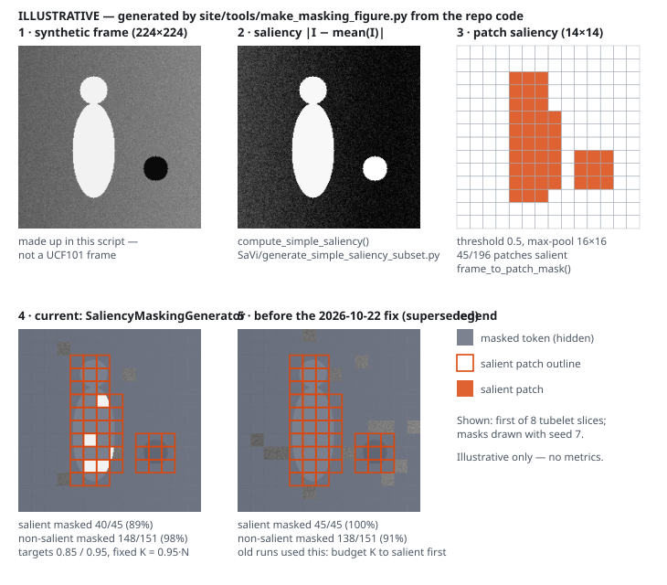

Self-supervised video learning · course research project
SaViMAE
Saliency-aware masking for VideoMAE. VideoMAE hides random spacetime patches. SaViMAE first computes a cheap saliency map, then masks salient and background patches at different rates, so the visual budget tracks where the action is.
The idea
Masked video autoencoders work because video is redundant: hide 90%+ of the patches and the model can still reconstruct them. Uniform random masking treats every patch the same, though. A static sky patch and a patch of a moving hand count equally.
SaViMAE splits the 16×16 patch tokens into salient and non-salient groups, based on a per-frame saliency map, and gives each group its own mask ratio:
--salient_mask_ratio--nonsalient_mask_ratioBoth values are the defaults in VideoMAE/run_mae_pretraining.py and the values used by the scripts
in scripts/. More of the salient region stays visible to the encoder. The background is masked
almost completely, since it is the easiest part to fill in.
Method
SaVi/generate_simple_saliency_subset.py, step 3 is SaVi/precompute_saliency_patches.py. Both run offline over the dataset. Step 4 runs per sample in the data loader. Only step 4
changes how VideoMAE trains.How it differs from VideoMAE
| VideoMAE (Tong et al., 2022) | SaViMAE | |
|---|---|---|
| Masking | Tube masking: one random 2D mask repeated over time, ratio 0.9–0.95 | Saliency-conditioned: separate ratios for salient and background tokens |
| Extra input | None | Precomputed per-video patch saliency (.npy) |
| Saliency model | — | Hand-crafted contrast saliency. No pretrained network, no RGB-D model |
| Backbone, decoder, loss | ViT + lightweight decoder, MSE | Unchanged (upstream code) |
| Compute target | Multi-GPU clusters | CPU-only HPC nodes via Slurm |
Credit: the model, pretraining engine and most of VideoMAE/ are from
MCG-NJU/VideoMAE by Zhan Tong, Yibing Song, Jue Wang and
Limin Wang, “VideoMAE: Masked Autoencoders are Data-Efficient
Learners for Self-Supervised Video Pre-Training” (NeurIPS 2022). SaViMAE adds the saliency pipeline in
SaVi/, the utilities in scripts/, and the saliency-aware data path and CPU changes
inside VideoMAE/.
Implementation note. The repo contains two versions of step 4.
SaVi/saliency_masking_generator.py applies the ratios per group exactly as described above.
The class the training run uses, DataAugmentationForSaViMAE in VideoMAE/datasets.py,
works differently. It fixes a total budget of 0.95 × tokens and gives 85% of that budget to salient tokens,
then tops up from the rest. When salient tokens are scarce, they all end up masked. Panels 4 and 5 below show
the difference on the same synthetic frame.
Training setup
| Data | UCF101, pre-extracted to JPEG frames. The full list in the repo has 13,034 videos; a 1,000-video subset list is also committed |
|---|---|
| Model | pretrain_videomae_base_patch16_224 (ViT-B, patch 16, tubelet 2) |
| Clip | 16 frames, sampling rate 4, 224×224 → 8×14×14 = 1,568 tokens |
| Masking | --mask_type savi, salient 0.85, non-salient 0.95 |
| Batch / epochs | 2 / 30 (README command) |
| Hardware | CPU only (--device cpu), submitted as Slurm jobs on Dartmouth HPC (Discovery cluster / Polaris) |
Results
Results pending. No training logs, loss curves or evaluation numbers are committed to this
repository yet. Checkpoints and logs are git-ignored. scripts/plot_savi_loss.py and
scripts/eval_savi_recon_loss.py produce them from a local run. This page will show results once
they are committed. Until then it reports no metrics.

uv run site/tools/make_masking_figure.py.Licensing
This repository carries mixed licences. Nothing here relicenses anything.
- The root
LICENSEis MIT. It covers the original SaViMAE code inSaVi/,scripts/and this site. VideoMAE/is upstream code under CC BY-NC 4.0 (seeVideoMAE/LICENSEandNOTICE.md), and that includes the SaViMAE modifications made inside it. Training with this pipeline is therefore subject to its non-commercial terms.RGBD_Video_SODis a git submodule pointing at a separate repository under its own licence.- UCF101 is not redistributed here. Its own terms apply.